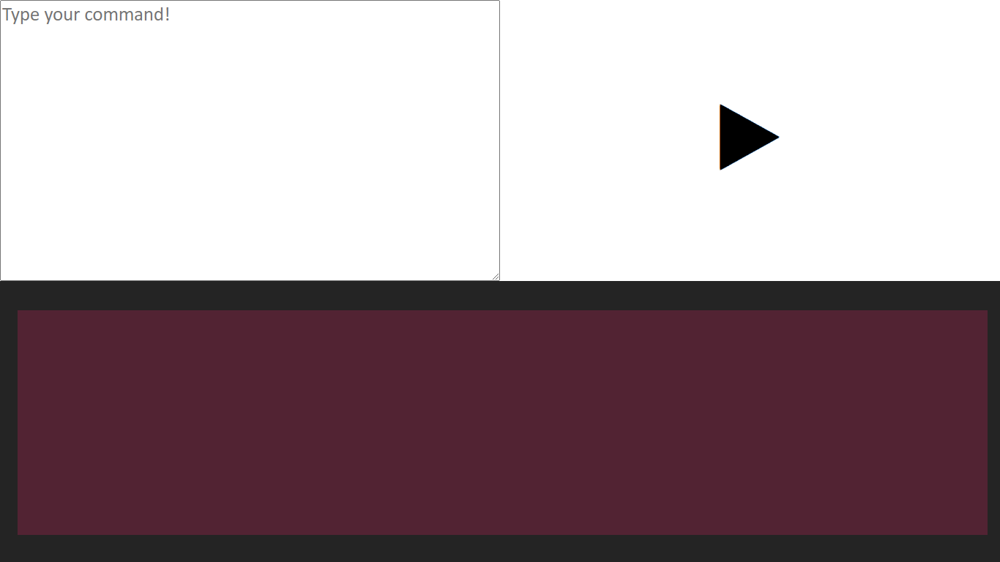

Hi, I am Samiul.
Welcome to my website. HTML , CSS , Javascript web developement codes are available on this site. My first creation is windows 10 demo with javascript. Enjoy my codes.There are download links too.
1. Windows 10 Demo by HTML

I have created this first time in my github jurney. Don't forget to follow me on github. This project is in Alpha release. When I publish the updated version of this project . Then users can use all the features of windows 10 in HTML webpage. Only in a browser from any device or operating system.
View Demo